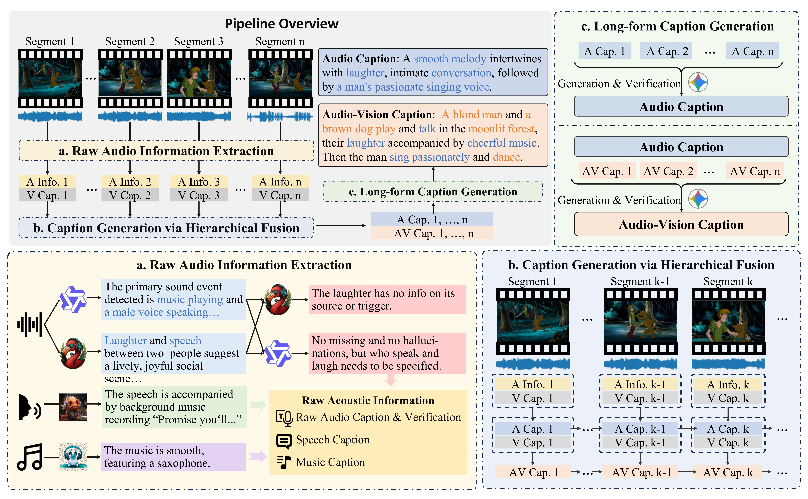
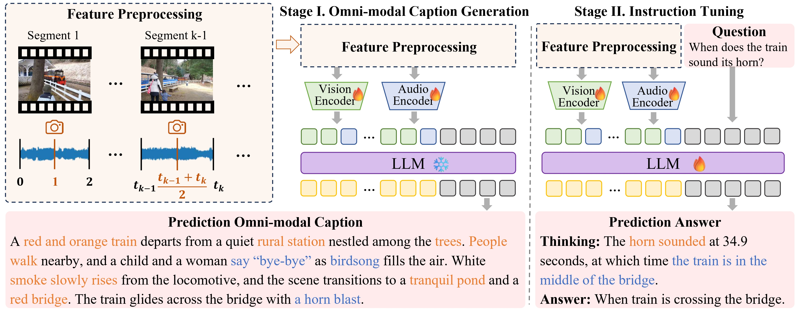
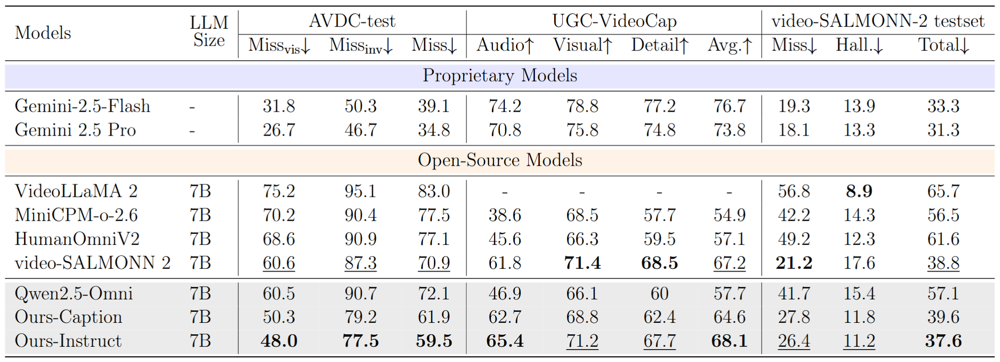
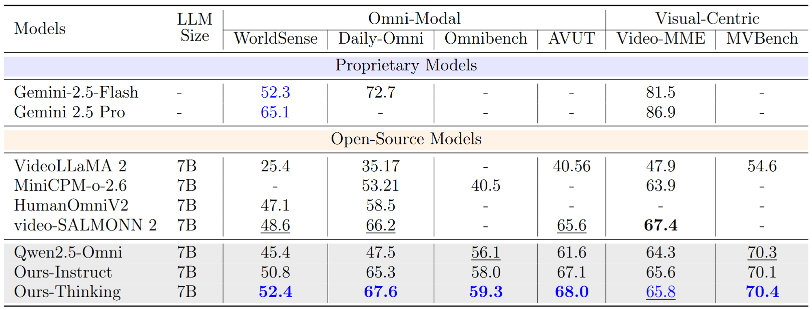
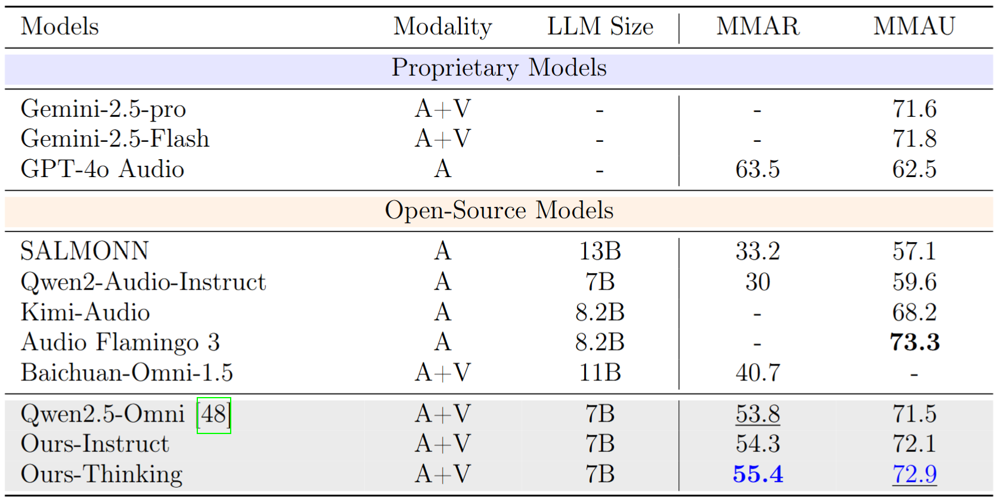

|
|
|
|
|
|
|
|
|
|
|
Code [GitHub] |
Paper [arXiv] |
Dataset [HuggingFace] |
Question: What action does the soldier perform while interacting with the equipment in the vehicle?
Choices:
A. Adjusting dials while muted thuds echo in the background.
B. Toggling switches as artillery explosions rumble outside.
C. Typing navigational data during a radio command.
D. Pressing a button synchronized with a mechanical click.
Answer: D
Reasoning:
Question decomposition: Identify the soldier's interaction with equipment, focusing on (1) visual actions, (2) corresponding audio cues, and (3) situational context.
Temporal grounding: The interaction occurs between 22.47 and 26.43 seconds, when the screens display a tactical map and 'CONNECTING TO VIDEO LINK' text. The soldier's arm presses a button during this lull in external noise.
Visual perception: A soldier's gloved arm moves into view to press a button on the control panel, partially obscuring the tactical map. The second screen shows a connection attempt, and the environment lacks visible external movement.
Audio perception: A distinct mechanical click aligns precisely with the hand's button press. No engine or artillery sounds are present, isolating the click as the key auditory cue.
Multimodal reasoning and answer synthesis: The synchronized combination of the visual button press (observed via the arm movement and control panel focus) and the isolated click sound (no competing noise) confirms the action.
Audio-Visual Caption: The scene begins with a first-person perspective from inside a military tank, looking out at a battlefield through a heads-up display that overlays critical data such as ammunition types M256 AP and M257 SMK, along with a 'WP-RDY' status above a barren desert landscape. Outside, a stark, sandy expanse stretches under harsh daylight, punctured by roiling plumes of gray-white smoke rising from distant explosions. The tank advances steadily, its treads churning thick clouds of dust into the air, while the mechanical growl of its engine reverberates through the compartment. Sharp metallic clanks synchronize with the treads crushing uneven terrain. A deep, thunderous blast erupts in the mid-distance, visually matched to a sudden burst of dirt and smoke near the horizon. Over the radio, frantic male voices shout warnings—'Incoming! Incoming!'—while sharp cracks of weapon fire pierce the din, their sources obscured by the haze. As the tank maneuvers, the viewpoint sways, and dust kicked up by its movement partially obscures the battlefield. Shadowy outlines of other military vehicles blur in the background, their shapes indistinct amid shifting smoke. Mid-distance artillery detonations synchronize with deep, resonant booms that shudder the tank's armor, each explosion casting stark, fleeting shadows across the ground. The HUD displays ammunition types such as M257 SMK and M256 AP, alongside a 'WP-RDY' status, as clipped radio commands cut through the chaos: 'All stations, halt, halt, halt. Line form.' The rhythmic clank-thud of the treads over compacted earth mirrors the deliberate advance of multiple olive-drab tanks in formation ahead, their outlines intermittently blurred by billowing dust and smoke. Visibility fluctuates as explosions intensify, their gray-white plumes merging with dust kicked up by the column of advancing armor. The tank's barrel dominates the foreground, sunlight glaring off its olive-drab surface and casting sharp shadows to the right. Several allied tanks are visible, their movements obscured by particulate-laden air. Airborne dust reduces the battlefield to a haze of silhouettes and fiery flashes. The scene then shifts to a dimly lit interior dominated by two illuminated screens on a console. The screen first displays a tactical map overlaid with grid lines, and then flashes 'CONNECTING TO VIDEO LINK.' Muted metallic thuds echo as a soldier's arm, clad in matte-green fatigues, adjusts dials on the control panel. A calm male voice states 'MAVEN mobile,' delivered without inflection, the phrase isolated in the absence of engine noise or artillery. Dust particles hover in the screens' backlighting, their stillness contrasting with the earlier chaos. Tactical updates refresh the map with new coordinates, emphasizing a lull in movement as the crew focuses on system checks—the prior cacophony of treads and explosions replaced by the clinical precision of muted switches and methodical communication."
Question: How do the individuals in the video express a mix of determination and disappointment during the unboxing, and what specific cues reflect these emotions?
Answer: The individuals exhibit determination through their persistent unboxing of multiple blind bags despite repeated setbacks, while their disappointment arises from discovering duplicate figurines. The man's frustrated comments like 'another Bob' and 'another Jimmy Junior' directly convey disappointment, while the woman's urgent 'We need to get Linda' signals focused determination. Visually, their hands remain active-tearing open new bags and organizing figurines-even as they voice complaints, indicating their commitment to continue the search. The contrast between their methodical physical actions and the audible sighs or groans highlights the blend of emotions.
Reasoning:
Question decomposition: 1. Identify the emotional mix (determination vs. disappointment). 2. Determine which actions and audio cues reflect each emotion.
Temporal grounding: Key moments include the man's frustrated remarks (e.g., at 24 seconds: 'another Bob') and the woman's goal-oriented dialogue ('We need to get Linda'), alongside continuous unboxing actions throughout the 18-26 second segment.
Visual perception: Hands repeatedly open new blind bags, arrange figurines, and handle packaging despite setbacks. The camera's steady focus on these motions emphasizes persistence.
Audio perception: The man's tone shifts to frustration when identifying duplicates ('Oh no, another Bob'), while the woman's urgent, insistent tone ('go again') and laughter during Jean's reveal reinforce her resolve to keep searching.
Multimodal reasoning and answer synthesis: Visuals show ongoing unboxing activity (determination), while audio includes sighs of frustration and persistent dialogue (e.g., ‘go again'). The simultaneous hands moving and speech demonstrate the co-occurrence of disappointment and persistence, proving the emotional duality in their shared activity.
Audio-Visual Caption: The video opens with a close-up of hands opening a cardboard package from which a metallic blind bag emerges, set against a blue pixelated backdrop where several Bob's Burgers collectible figurines are already arranged on a table. These brightly colored plastic characters, reflecting the show's cartoonish designs, include various figures and accessories. The sharp crinkling of foil fills the audio as the hands shift to a sealed Kidrobot-branded bag, fingers tugging at its edges with visible effort. Midway through, a figurine in a yellow shirt with blue stripes and brown trousers emerges, held aloft for inspection. A man's voice interrupts the rustling, frustration evident as he remarks, 'Okay, that's another duplicate of Jimmy Junior-go again.' His words coincide with the muffled crumple of the discarded foil bag being set aside. The figurine is placed among the others, its plastic base tapping softly against the table. The camera widens to reveal more of the collectible figurines and stacked Bob's Burgers boxes in the background. A hand lifts a new colorful box into focus, its artwork vivid against the blurred figurines. The sound of crinkling shifts as fingers adjust the box. A woman's excited voice is heard: 'We need to get Linda.' Moments later, the man groans, 'Oh no, another Bob-okay, go again,' his disappointment syncing with the clatter of a figurine-a mustached Bob Belcher-being placed down. Foil wrappers are twisted and flattened as the hands maneuver another metallic blind bag. A playful tension builds as the woman's voice rises: 'Come on Linda, come on Louise, who do you have there?' The bag's foil screeches under strain, punctuated by a jagged tearing noise as the seal splits. Off-screen laughter from the woman overlaps with the man's dry comment, 'Yeah, making all the duplicates,' while cardboard creaks audibly. Suddenly, the metallic blind bag gives way. A figurine clad in a burger costume emerges, its painted details sharp under the light. The woman's voice brightens with recognition: 'Oh, look at that! Jean in the burger suit-that's Jean, right?' The man confirms, 'Yep, Jean in the burger suit.' Her laughter mingles with muffled taps as the figurine is rotated. Behind it, rows of sealed blind bags and boxes form a blurred yet orderly backdrop. Throughout, the environment feels insulated-no ambient noise dilutes the crisp crinkling of foil, the shuffle of cardboard, or the casual interplay of voices. The static camera frames each action deliberately: hands gripping, tearing, adjusting, while the figurines and packaging dominate both the visual and auditory narrative. The unboxing alternates between anticipation and mild frustration, with tactile sounds and spontaneous dialogue underscoring a shared, methodical hunt for prized collectibles against a backdrop of vibrant, curated fandom.

Automatic pipeline for the audio-visual decoupled caption generation. (I). Multiple audio and language models collaborate to extract raw auditory information, including general audio captions, music and speech descriptions, and verification results. (II). The extracted audio information is temporally aligned and integrated with visual content to produce segment-level audio and audio-visual captions in sequential order, ensuring temporal continuity. (III). The long-form caption generation stage summarizes all segment-level captions into a coherent global video caption, while multimodal verification and correction refine accuracy and consistency. Vision- and audio-related content is highlighted in orange and blue, respectively. Abbreviations: Cap.~(Caption), Info.~(Information).

Model architecture. The framework preserves fine-grained audio-visual correspondence via feature preprocessing and employs a two-stage training strategy: Stage I. Omni-modal caption generation training to optimal multimodal representations, and Stage II. Instruction Tuning for QA, supporting both direct answers and chain-of-thought reasoning. Abbreviations: Cap. (Caption), Ans.(Answer).
The results yields three key findings: (i). Proprietary models remain strong. Omni-modal proprietary systems perform consistently well, producing fluent and semantically rich captions with low missing rates. (ii). Open-source baselines lag, especially on invisible audio. They struggle to detect non-visual sound events with nearly 90% missing on AVDC-test and exhibit a clear coverage-precision trade-off: reducing misses often increases hallucinations, while limiting hallucinations reduces content coverage. (iii). Our model improves coverage and balance. It achieves the lowest missing rates for both visible and invisible sounds on AVDC-test, reducing overall misses by over 10% vs. Qwen2.5-Omni. It also shows stronger audio perception on UGC-VideoCap and achieves the best miss-hallucination trade-off on Video-SALMONN-2.

The results on video QA benchmarks shows: (i). Proprietary models lead overall. Commercial omni-modal systems achieve the highest accuracy, benefiting from large-scale pretraining and optimized multimodal integration. (ii). Our training brings consistent gains. Built on Qwen2.5-Omni, our model improves accuracy by over 3% across all omni benchmarks, while preserving performance on vision-centric tasks (Video-MME, MVBench). (iii). Thinking mode further boosts performance. It matches or surpasses prior open-source models and reaches parity with Gemini-2.5-Flash on WorldSense, narrowing the gap to proprietary systems.

The results on audio QA benchmarks shows: (i). Improvements over the backbone. Our model consistently outperforms Qwen2.5-Omni on MMAU and MMAR, demonstrating that data modeling invisible sounds and audio-visual misalignment enhance auditory representations and robustness. (ii). Competitive with audio-language systems. It matches or surpasses strong baselines, outperforming most open-source models. This indicates that multimodal training also improves pure audio comprehension, even without visual input.
